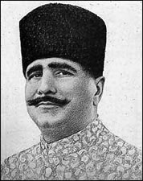

Muhammad Abduh Muhammad Iqbal, (lahir di Sialkot, Punjab, India, 9 November 1877 – meninggal di Lahore, 21 April 1938 pada umur 60 tahun), dikenal juga sebagai Allama Iqbal, adalah seorang penyair, politisi, dan filsuf besar abad ke-20. Ia dianggap sebagai salah satu tokoh paling penting dalam sastra Urdu, dengan karya sastra yang ditulis baik dalam bahasa Urdu maupun Persia. Iqbal dikagumi sebagai penyair klasik menonjol oleh sarjana-sarjana sastra dari Pakistan, India, maupun secara internasional. Meskipun Iqbal dikenal sebagai penyair yang menonjol, ia juga dianggap sebagai "pemikir filosofis Muslim di masa modern". Buku puisi pertamanya, Asrar-e-Khudi, juga buku puisi lainnya termasuk Rumuz-i-Bekhudi, Payam-i-Mashriq dan Zabur-i-Ajam;; dicetak dalam bahasa Persia pada 1915. Di antara karya-karyanya, Bang-i-Dara, Bal-i-Jibril, Zarb-i Kalim dan bagian dari Armughan-e-Hijaz merupakan karya Urdu-nya yang paling dikenal. Bersama puisi Urdu dan Persia-nya, berbagai kuliah dan surat dalam bahasa Urdu dan Bahasa Inggris-nya telah memberikan pengaruh yang sangat besar pada perselisihan budaya, sosial, religius dan politik selama bertahun-tahun. Pada 1922, ia diberi gelar bangsawan oleh Raja George V, dan memberinya titel "Sir". Ketika mempelajari hukum dan filsafat di Inggris, Iqbal menjadi anggota "All India Muslim League" cabang London. Kemudian dalam salah satu ceramahnya yang paling terkenal, Iqbal mendorong pembentukan negara Muslim di Barat Daya India. Ceramah ini diutarakan pada ceramah kepresidenannya di Liga pada sesi Desember 1930. Saat itu ia memiliki hubungan yang sangat dekat dengan Quid-i-Azam Mohammad Ali Jinnah. Iqbal dikenal sebagai Shair-e-Mushriq yang berarti "Penyair dari Timur". Ia juga disebut sebagai Muffakir-e-Pakistan ("The Inceptor of Pakistan") dan Hakeem-ul-Ummat ("The Sage of the Ummah"). Di Iran dan Afganistan ia terkenal sebagai Iqbal-e Lahore ("Iqbal dari Lahore"), dan sangat dihargai atas karya-karya berbahasa Persia-nya. Pemerintah Pakistan menghargainya sebagai "penyair nasional", hingga hari ulang tahunnya merupakan hari libur di Pakistan.
|